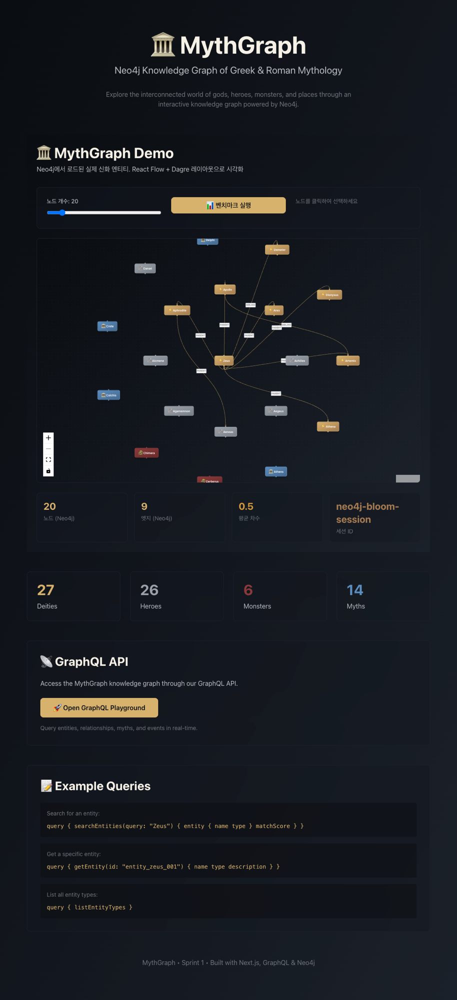
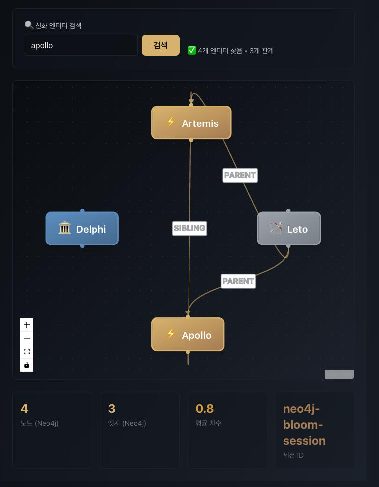

Foundation 고도화 및 검색 기능 통합
2026-08-07 · 100% 완료 · 9/9
Bloom 레이아웃 구현, 엣지 시각화 개선, 키워드 검색 UI 구축으로
그래프 인터랙션을 완성한다.
P0 · 필수
P1 · 목표
프론트엔드: React Flow + Bloom 레이아웃
상태 관리: Apollo Client 3.9 + GraphQL 캐싱
데이터베이스: Neo4j Aura + Full-text Search
검증 & 품질: searchValidation.ts + 30+ 테스트

Zeus 중심 동심원 배치 · 엣지 라벨 & 화살표 · 70+ 신화 엔티티

Neo4j Full-text search · 키워드 매칭 · 검색 결과 유효성 검증
Sprint 3 이월
Open Questions
| # | 질문 | 기한 |
|---|---|---|
| OQ-6 | 벡터 공급자 선택 | Day 1 |
| OQ-7 | 최단경로 알고리즘 | Day 1 |
| OQ-8 | 하이브리드 가중치 | Day 2 |
| 리스크 | 영향도 | 완화 방법 |
|---|---|---|
| 벡터 임베딩 비용 | High | 월 $50-300 증가 → 로컬 Ollama 대체 검토 |
| Neo4j 쿼리 복잡도 | High | 최단 경로 계산 폭발 → 경로 길이/노드 상한 설정 |
| 그래프 렌더링 성능 | Medium | 200+ 노드 프리징 → memoization 강화, 가상화 검토 |
| Seed 데이터 품질 | Medium | 관계 오류 신뢰도 저하 → 자동 검증, Peer review |
| API 응답시간 | Medium | 복합 쿼리 SLA 위반 → 조기 성능 벤치마크 (Day 15) |
| 지표 | 목표 | 검증 방법 |
|---|---|---|
| Entity 검색 응답 | <500ms | k6 부하 테스트 (1000 req/s) |
| 최단 경로 계산 | <2초 | 다양한 경로 길이 테스트 |
| 하이브리드 검색 | <1.5초 | Vector + Keyword 조합 테스트 |
| 그래프 렌더링 (200노드) | 60fps | React DevTools Profiler |
| API 99%ile 응답 | <3초 | 성능 모니터링 (New Relic 검토) |
감사합니다